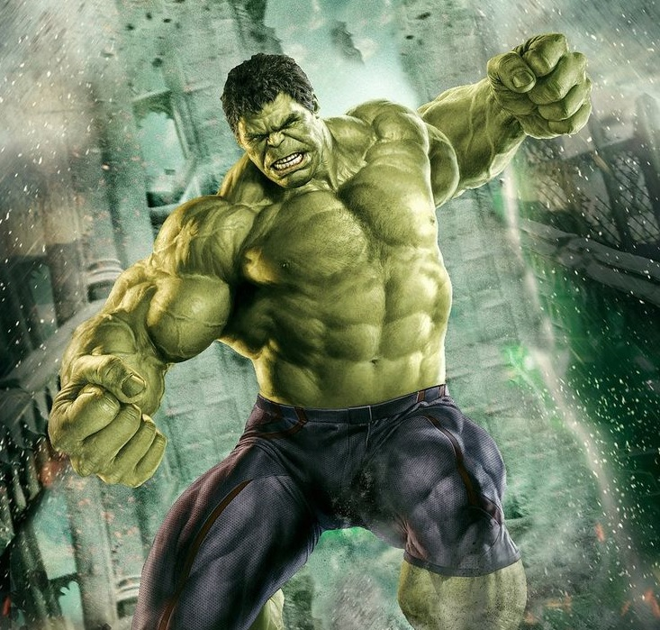
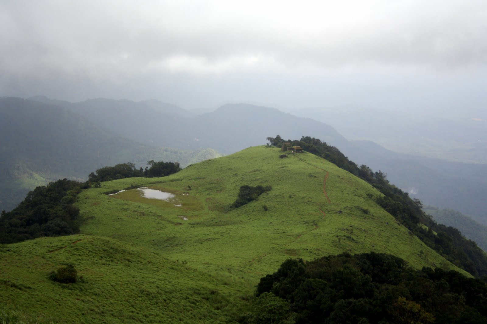
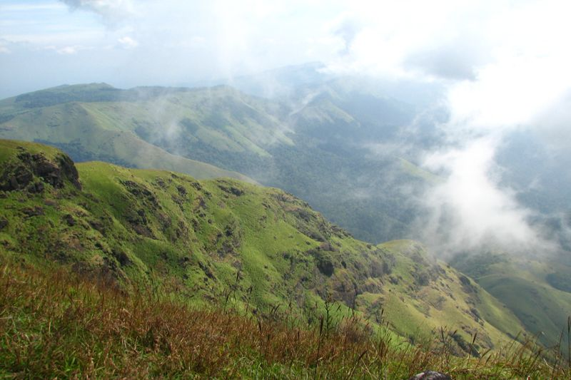
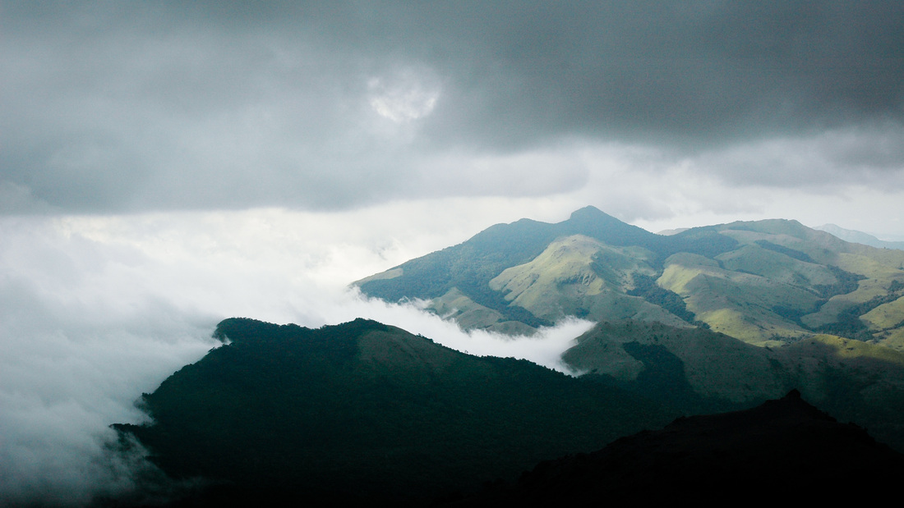
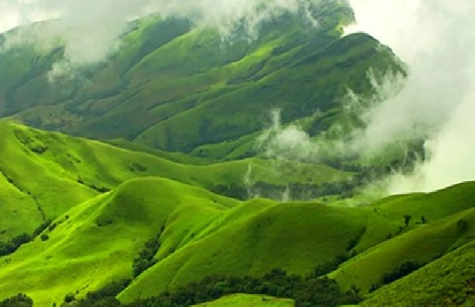
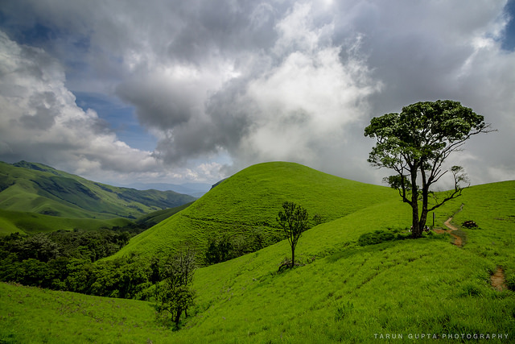
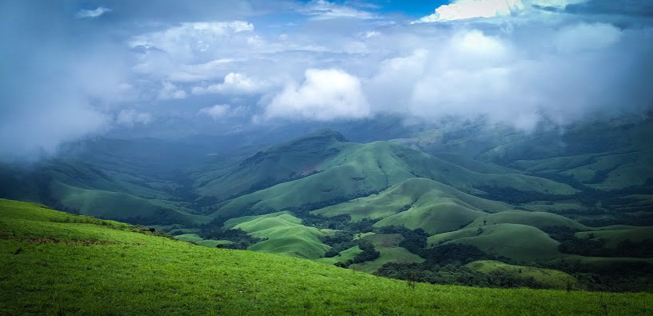

This page is under construction, Please visit back after sometime


This is About us page.
This page is under construction, Please visit back after sometime
 Raghu
Raghu
 Praveen
Praveen
Chethan
Kushal

Sachin
Harsha
Welcome to Events page.
The page is under construction, Please visit back after sometime
Ecstatic Tadiandamol



- Tadiandamol or Thadiyandamol is the highest mountain of Kodagu district, Karnataka, India. It is the fourth highest peak in Karnataka. It is located Western Ghats range, and reaches an elevation of 1,748 m. The mountain has patches of shola forests in the valleys.
- The Nalaknad (also known as Nalnad - meaning 4 villages) palace at the foothills is an important historical landmark. This was one of the landmarks mapped during the Great Trigonometric Survey.
- It is a place of interest for trekkers and naturalists. The climb to the top and back can be completed as a day hike; camping is banned since December 2016. Click here or here To know more about this trek.
Trek to Kudremukh



- Kuduremukha is a mountain range and name of a peak located in Chikkamagaluru district, in Karnataka, India. It is also the name of a small hill station cum mining town situated near the mountain, about 48 kilometres from Karkala and around 20 kilometres from Kalasa.
- The name Kuduremukha literally means 'horse-face' (Kannada) and refers to a particular picturesque view of a side of the mountain that resembles a horse's face. It was also referred to as 'Samseparvata', historically since it was approached from Samse village.
- Kuduremukh is Karnataka's 3rd highest peak after Mullayangiri and Baba Budangiri. The nearest International Airport is at Mangalore which is at distance of 99 kilometres. Click here To know more about this trek.